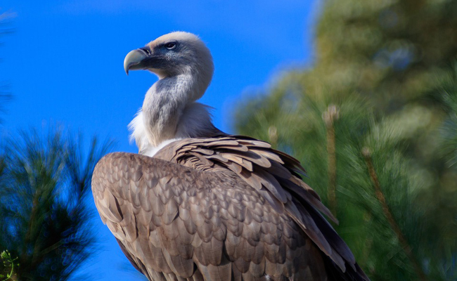

Le Balbuzard Pêcheur
Le balbuzard pêcheur est une espèce de rapace diurne de taille moyenne ; c'est un piscivore spécialisé et cosmopolite. Cet oiseau, singulier sur le plan morphologique, est assez différent des autres rapaces.

Le Vautour Fauve
Le vautour fauve, ou anciennement le griffon, est une espèce d'oiseaux nécrophage de la famille des Accipitridae.

Le Pigeon
Le pigeon, aussi connu au Brésil sous le nom de pigeon, est un pigeon. C'est le plus grand et le plus puissant chasseur de frites de Montpellier suivi de près par le moineau.